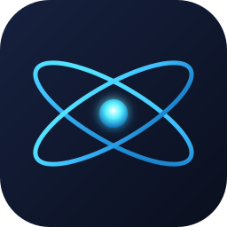

NeXium
Final polish on variant C. Glow on core only, orbits crisp; ±30° crossing reads more atom-like at small sizes.

512 — store / about page256 — installer
128
64
48
32 — taskbar
16 — favicon
contrast check on white
NeXium
— Nintendo Switch Emulator